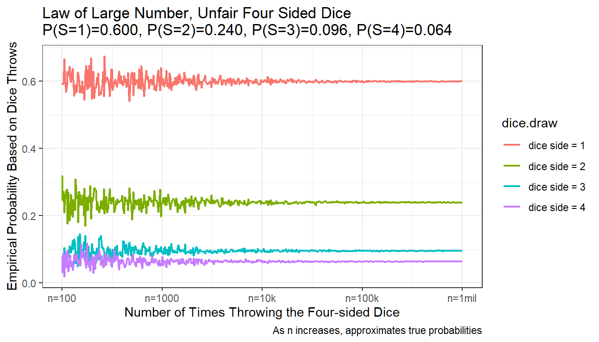

Chapter 4 Basics of Probability
4.1 Experimental Outcomes
Go back to fan’s REconTools Package, R Code Examples Repository (bookdown site), or Intro Stats with R Repository (bookdown site).
- Experiment
- “We define an experiment as a process that generates well-defined outcomes” (ASWCC P171)
- Sample Space
- “The sample space for an experiment is the set of all experimental outcomes” (ASWCC P172)
- Experimental outcomes
- “An experimental outcome is also called a sample point to identify it as an element of the sample space.” (ASWCC P172)
- Events
- “An Event is a collection of Sample Points” (AWSCC P181), could be just one sample point (one experimental outcome)
- Probability
- “Probability is a numerical measure of the likelihood that an event will occur.” (AWSCC P171)
4.1.1 Sample Space and Probabilities
Sample Space and Experimental Outcomes
We can use the letter \(S\) or \(\Omega\) to denote sample space. Supose we have a set of \(n\) experimental outcomes:
\[S = \left\{ E_1, E_2, ..., E_{n-1}, E_n\right\}\]
We can call \(S\) a sample space if:
- \(E_i\) are mutually exclusive:
- \(E_i\) for all \(i\) are separate outcomes that do not overlap.
- Suppose there are multiple people running for the Presidency, some of these candidates are women, and some of these women are from Texas. If one of the \(E_i\) is that a woman becomes the President, and another \(E_i\) is that someone from Texas becomes the President, \(S\) would not be a sample space, because we could have a woman who is also from Texas win the Presidency.
- \(E_i\) are jointly exhaustive:
- For the experiment with well-defined outcomes, the \(E_i\) in \(S\) need to cover all possible outcomes.
- If you are throwing a six sided dice, there are six possible experimental outcomes, if \(S\) only has five of them, it would not be a sample space.
Thinking about the world in terms of sample space is pretty amazing.
Assigning Probability to Experimental Outcomes
We can assign probabilities to events of a sample space. Since experimental outcomes are themselves events as well, we can assign probabilities to each experimental outcome.
For the mutually exclusive and jointly exhaustive experimental outcomes of the sample space, there are two equirements for assigning probabilities: - Each element of the sample space can not have negative probability of happening, and also can not have more than \(1\) probability of happening, with \(P\) denotes probability, we have: \[0 \le P(E_i) \le 1\] - The probabilities of all the mutually exclusive and jointly exhaustive experimental outcomes in the sample space sum up to \(1\). For an experimental with \(n\) experimental outcomes: \[\Sigma_{i=1}^{n} P(E_i) = 1\]
# Load Library
library(tidyverse)
# Define a List of Experimental Outcomes
experimental.outcomes.list <- c('Heavy Rain', 'Light Rain', 'No Rain')
# Probabilities on experimental outcomes
experimental.outcome.prob <- c(0.1, 0.2, 0.7)
# Show these in a Tibble
kable(tibble(tomorrow.experimental.outcomes = experimental.outcomes.list,
experimental.outcome.prob = experimental.outcome.prob)) %>% kable_styling_fc()| tomorrow.experimental.outcomes | experimental.outcome.prob |
|---|---|
| Heavy Rain | 0.1 |
| Light Rain | 0.2 |
| No Rain | 0.7 |
# What could happen tomorrow?
# We live in a probabilistic world, from today's perspective, tomorrow is uncertain
# If we draw tomorrow from a hat, given our possible outcomes
# and the probabilities associated with the outcomes
# what are the possible tomorrows?
number.of.tomorrow.to.draw = 20
tomorrow.weather.draws <- sample(experimental.outcomes.list,
size = number.of.tomorrow.to.draw,
replace = TRUE,
prob = experimental.outcome.prob)
# A little tibble to show results
# There are only three unique tomorrows, each of three weather outcomes
# could happen, but the chance of each happening differs by the probabilities
# we set in experimental.outcome.prob
kable(tibble(which.tomorrow = paste0('tomorrow:', 1:number.of.tomorrow.to.draw),
tomorrow.weather = tomorrow.weather.draws)) %>% kable_styling_fc()| which.tomorrow | tomorrow.weather |
|---|---|
| tomorrow:1 | No Rain |
| tomorrow:2 | No Rain |
| tomorrow:3 | No Rain |
| tomorrow:4 | No Rain |
| tomorrow:5 | Light Rain |
| tomorrow:6 | No Rain |
| tomorrow:7 | No Rain |
| tomorrow:8 | No Rain |
| tomorrow:9 | No Rain |
| tomorrow:10 | No Rain |
| tomorrow:11 | Light Rain |
| tomorrow:12 | Heavy Rain |
| tomorrow:13 | No Rain |
| tomorrow:14 | No Rain |
| tomorrow:15 | Light Rain |
| tomorrow:16 | No Rain |
| tomorrow:17 | Heavy Rain |
| tomorrow:18 | Light Rain |
| tomorrow:19 | No Rain |
| tomorrow:20 | No Rain |
4.1.2 Union and Intersection and Complements
Definitions:
- Complement of Event \(A\):
- “Given an event A, the complement of A is defined to be the event consisting of all sample points that are not in A. The complement of A is denoted by \(A^c\).” (AWSCC P185)
- The Union of Events \(A\) and \(B\):
- “The union of A and B is the event containing all sample points belonging to \(A\) or \(B\) or both. The union is denoted by \(A \cup B\).” (AWSCC P186)
- The Intersection of Events \(A\) and \(B\):
- “Given two events \(A\) and \(B\), the intersection of \(A\) and \(B\) is the event containing the sample points belonging to both \(A\) and \(B\). The intersection is denoted by \(A \cap B\).” (AWSCC P187)
Probabilities for Complements and Union
The Probabilities of Complements add up to 1: \[P(A) + P(A^c) = 1\]
The Addition Law: \[P (A \cup B) = P(A) + P(B) - P (A \cap B)\]
If two events \(A\) and \(B\) are mutually exclusive, which means they do not share any experimental outcomes (sample points), then: \(P (A \cap B) = 0\), and \(P (A \cup B) = P(A) + P(B)\).
The Multiplication Law for Indepedent Events: \[P (A \cap B) = P(A) \cdot P(B)\]
If the probability of event \(A\) happening does not change the probability of event \(B\) happening, and vice-versa. The two events are independent. Below we arrive this formulation from conditional probability.
4.1.3 Conditional Probability
We use a straight line \(\mid\) to denote conditional probability. Given \(A\) happens, what is the probability of \(B\) happening?
\[P (A \mid B) = \frac{P(A \cap B)}{P(B)}\]
This says the probability of \(A\) happening given that \(B\) happens is equal to the ratio of the probability that both \(A\) and \(B\) happen divided by the probability of \(B\) happening.
The formula also means that the probability that both \(A\) and \(B\) happens is equal to the probability that \(B\) happens times the probability that \(A\) happens conditional on \(B\) happening: \[ P(A \cap B) = P (A \mid B)\cdot P(B)\]
If \(A\) and \(B\) are independent, that means the probability of \(A\) happening does not change whether \(B\) happens or not, then, \(P (A \mid B) = P(A)\), and: \[ \text{If A and B are independent: } P(A \cap B) = P(A) \cdot P(B)\] This is what we wrote down earlier as well.
4.2 Sample Space and Probability Examples
Go back to fan’s REconTools Package, R Code Examples Repository (bookdown site), or Intro Stats with R Repository (bookdown site).
In Sample Space, Experimental Outcomes, Events, Probabilities, we discussed various definitions. Here are some examples.
- Experiment: Throwing a Quarter
- Experimental outcomes: lands on Heads or lands on Tails
- Sample Space: \(S=\left\{H, T\right\}\)
- Event: There are only two experimental outcomes.
- Probability:
- \(1 \ge P(H) \ge 0\)
- \(1 \ge P(T) \ge 0\)
- \(P(H) + P(T) = 1\)
4.2.1 Presidential Election
After various primaries there are four major candidates who could become president. Voting takes place in half a year. Over this year, many events could happen that would increase or decrease the support for candidates. After voting, the outcome is certain. But from today’s perspective, when voting is one year from now, outcomes are uncertain.
- Experiment: Presidential Election in One Year
- Experimental outcomes: candidates DT, HC, JS, GJ winning.
- Sample Space: {DT, HC, JS, GJ}
- Event:
- A woman wins is an event: \(\text{W} = \left\{HC, JS\right\}\)
- A man wins: \(\text{M} = \left\{DT, GJ\right\}\)
- Someone from a small party wins: \(\text{S} = \left\{JS, GJ\right\}\)
- Probability:
- The probability that a woman does not win: \[P(\text{W}^c) = 1 - P(\text{W}) = P(\text{M})\]
- There are no experimental outcomes, given the four that we have, where both woman and man wins, the two events are mutually exclusive: \[P(\text{W} \cap \text{M}) = 0\]
- The probability that a woman wins conditional on a man winnning is zero: \[P(\text{W} \mid \text{M}) = \frac{P(\text{W} \cap \text{M})}{P(\text{M})} = \frac{0}{P(DT) + P(GJ)} = 0\]
- The probability that a woman wins and someone from a small party wins: \[P(\text{W} \cap \text{S}) = P(JS)\]
- The probability that a woman wins conditional on someone from a small party winning: \[P(\text{W} \mid \text{S}) = \frac{P(\text{W} \cap \text{S})}{P(\text{S})} = \frac{P(JS)}{P(JS) + P(GJ)} \]
- Either a women wins or someone from a small party wins: \[P(\text{W} \cup \text{S}) = P(\text{W}) + P(\text{S}) - P(\text{W} \cap \text{S}) = P(HC) + P(JS) + P(JS) + P(GJ) - P(JS) = P(HC) + P(JS) + P(GJ)\]
4.2.2 Throwing a Dice
- Experiment: Throwing a Dice
- Experimental outcomes: lands on one of the six sides
- Sample Space: \(S=\left\{1,2,3,4,5,6\right\}\)
- Event: One could define many possible events. The experimental outcome is less than 3 is an event, greater than 2 is an event, been odd is an event, etc.
In Throw an Unfair Four Sided Dice, we show what happens when we throw an unfair four sided dice many times. In the example below, we will throw an unfair dice, where the probability of landing on the side with 1 is 50 percent, and the chance of landing on each successive side is half of the chance of landing on the previous side. This is a dice weighted towards the smaller numbers.
See the table below for the true probabilities of the unfiar dice.
# Load Library
library(tidyverse)
# Define a List of Experimental Outcomes
experimental.outcomes.list <- c(1,2,3,4,5,6)
# Probabilities on experimental outcomes
# Suppose dice is weighted towards 1
fracbase <- 0.50
experimental.outcome.prob <- c((1-fracbase)^0*fracbase,
(1-fracbase)^1*fracbase,
(1-fracbase)^2*fracbase,
(1-fracbase)^3*fracbase,
(1-fracbase)^4*fracbase,
(1-fracbase)^5)
# Show these in a Tibble
dice.true.prob <- tibble(dice.outcomes.list = experimental.outcomes.list,
dice.true.prob = experimental.outcome.prob)
kable(dice.true.prob) %>% kable_styling_fc()| dice.outcomes.list | dice.true.prob |
|---|---|
| 1 | 0.50000 |
| 2 | 0.25000 |
| 3 | 0.12500 |
| 4 | 0.06250 |
| 5 | 0.03125 |
| 6 | 0.03125 |
4.2.2.1 Throw the Dice 10 Times
We throw the dice 10 times, each time, get one of the six possible experimental outcomes, the chance of getting these outcomes are determined by the true probabilities of the unfair dice. If we throw 10 times, that does not mean we will get exact side 1 five times. Side 1 having proability of 50 percent means for each throw there is a 50 percent chance of getting side 1. But each throw is independent of other throws, so we could just by chance end up with no side 1 after ten throws, although the chance of that happening is low. How many times did we get each side in the ten random tosses below?
# What could happen tomorrow?
# We live in a probabilistic world, drawing future from a hat
# If we draw 20 times, what happens in the future?
# It's pretty amazing, we get to see the future!
number.of.futures.to.draw = 10
future.dice.draws <- sample(experimental.outcomes.list,
size = number.of.futures.to.draw,
replace = TRUE,
prob = experimental.outcome.prob)
# A little tibble to show results
kable(tibble(which.future.dice = paste0('dice draws:', 1:number.of.futures.to.draw),
dice.draws = future.dice.draws)) %>% kable_styling_fc()| which.future.dice | dice.draws |
|---|---|
| dice draws:1 | 1 |
| dice draws:2 | 1 |
| dice draws:3 | 1 |
| dice draws:4 | 2 |
| dice draws:5 | 6 |
| dice draws:6 | 3 |
| dice draws:7 | 1 |
| dice draws:8 | 1 |
| dice draws:9 | 2 |
| dice draws:10 | 1 |
4.2.2.2 Redefining Sample Space for Throwing a Dice
Following our definition for sample space above, we can actually define an alternative sample spaces, for example:
- Experiment: Throwing a Dice
- Experimental outcomes: lands on greater or equal to 4, lands on less or equal to 3
- Sample Space: \(S=\left\{\text{'less equal to 3'}, \text{'greater equal to 4'}\right\}\)
This is also a sample space with two sample points (or experimental outcomes). Following our definitions earlier, these two experimental outcomes are mutually exclusive and jointly exhaustive. We could also call these two experimental outcomes here two different events of the sample space with the six sample points.
4.2.3 Two Basketball Games
- Experiment: One team plays two games
- Experimental outcomes:
- \(E_1\): win first, win second
- \(E_2\): win first, lose second
- \(E_3\): lose first, win second
- \(E_4\): lose first, lose second
- Sample Space: \(S=\left\{E_1, E_2, E_3, E_4\right\}\)
- Events:
- no wins: \(\text{W0} = \left\{E_4\right\}\)
- win twice: \(\text{W2} = \left\{E_1\right\}\)
- win first game: \(\text{WF} = \left\{E_1, E_2\right\}\)
- win second game: \(\text{WS} = \left\{E_1, E_3\right\}\)
- etc.
- Probability:
- What is the probability of winning the second game and the first game? Using the conditional probability formula, it is the probability of winning the first game times the probability of winning the second game conditional on winning the first game:
\[P(\text{WS} \cap \text{WF}) = P(\text{WS} \mid \text{WF}) \cdot P(\text{WF}) = P(E_1)\]
- If winning the first game does not change the probability of winning the second game, then we have: \[P(E_1) = P(\text{WS} \mid \text{WF}) \cdot P(\text{WF}) = P(\text{WS}) \cdot P(\text{WF}) \]
- If the chance of winning the first and second game are the same, \(P(\text{WS})=P(\text{WF})=p\), then we have: \[P(E_1) = P(\text{WS}) \cdot P(\text{WF}) = p \cdot p = p^2 \]
- The probability of winning at least one game: \[P(\text{WS} \cup \text{WF}) = P(\text{WS}) + P(\text{WF}) - P(\text{WS} \cap \text{WF}) = P(E_1) + P(E_2) + P(E_3) \]
- What is the probability of winning the second game and the first game? Using the conditional probability formula, it is the probability of winning the first game times the probability of winning the second game conditional on winning the first game:
\[P(\text{WS} \cap \text{WF}) = P(\text{WS} \mid \text{WF}) \cdot P(\text{WF}) = P(E_1)\]
4.2.3.1 Redefining Sample Space for two Basketball Game
Following our definition for sample space above, we can actually define an alternative sample spaces using these events:
- Experiment: One team plays two games
- Experimental outcomes: Win 0, 1, or 2 times
- Sample Space: \(S=\left\{\text{'0 Win'}, \text{'1 Win'}, \text{'2 Wins'}\right\}\)
This is also a sample space with three sample points (or experimental outcomes). Following our definitions earlier, these three experimental outcomes are mutually exclusive and jointly exhaustive. We could also call these three experimental outcomes here three different events of the sample space with the four paths of game play experimental outcomes (sample points).
4.3 Law of Large Number
Go back to fan’s REconTools Package, R Code Examples Repository (bookdown site), or Intro Stats with R Repository (bookdown site).
In Sample Space, Experimental Outcomes, Events, Probabilities, we discussed various definitions. We went over various examples in Examples of Sample Space and Probabilities. Here we look at what happens if we throw a four sided dice many times.
4.3.1 An Unfair Dice
Throwing a Dice:
- Experiment: Throwing a Four Sided Dice
- Experimental outcomes: lands on one of the four sides
- Sample Space: \(S=\left\{1,2,3,4\right\}\)
In the example below, we will throw an unfair dice, where the probability of landing on the side with 1 is 60 percent, and the chance of landing on each successive side is 60 percent of the chance of landing on the previous side. This is a dice weighted towards the smaller numbers.
See the table below for the true probabilities of the unfair dice.
# Load Library
library(tidyverse)
# Define a List of Experimental Outcomes
experimental.outcomes.list <- c(1,2,3,4)
# Probabilities on experimental outcomes
# Suppose dice is weighted towards 1
fracbase <- 0.6
experimental.outcome.prob <- c((1-fracbase)^0*fracbase,
(1-fracbase)^1*fracbase,
(1-fracbase)^2*fracbase,
(1-fracbase)^3)
# Show these in a Tibble
dice.true.prob <- tibble(dice.outcomes.list = experimental.outcomes.list,
dice.true.prob = experimental.outcome.prob)
kable(dice.true.prob) %>% kable_styling_fc()| dice.outcomes.list | dice.true.prob |
|---|---|
| 1 | 0.600 |
| 2 | 0.240 |
| 3 | 0.096 |
| 4 | 0.064 |
4.3.1.1 Throw the Dice 5 Times
We throw the dice 5 times, each time, get one of the four possible experimental outcomes, the chance of getting these outcomes are determined by the true probabilities of the unfair dice.
# What could happen tomorrow?
# We live in a probabilistic world, drawing future from a hat
# If we draw 5 times, what happens in the future?
# It's pretty amazing, we get to see the future!
number.of.futures.to.draw = 5
future.dice.draws <- sample(experimental.outcomes.list,
size = number.of.futures.to.draw,
replace = TRUE,
prob = experimental.outcome.prob)
# A little tibble to show results
kable(tibble(which.future.dice = paste0('dice draws:', 1:number.of.futures.to.draw),
dice.draws = future.dice.draws)) %>% kable_styling_fc()| which.future.dice | dice.draws |
|---|---|
| dice draws:1 | 2 |
| dice draws:2 | 1 |
| dice draws:3 | 1 |
| dice draws:4 | 1 |
| dice draws:5 | 2 |
4.3.1.2 Throw the dice 50, 5000 and 500,000 times
If we throw the dice 50 times, 5000 times, 500,000 times, what will happen?
For each group of experiments, we can aggregate the empirical distribution of the four sides. The more times we throw the dice, the closer our empirical distribution gets to the true distribution. We can see the result from the table below.
To do this, we first write a function, then we lapply to invoke the function multiple times.
# Function to Make Many Draws
future.draws <- function(number.of.futures.to.draw, select.dice.draws=FALSE) {
# Number.of.futures.to.draw = 500
# Future Draws
dice.draws <- sample(experimental.outcomes.list,
size = number.of.futures.to.draw,
replace = TRUE,
prob = experimental.outcome.prob)
# Empirical Distribution Name
sample.frac.var <- paste0('sample.frac.n', sprintf("%d", number.of.futures.to.draw))
# Group Futures
group.fracs <- tibble(dice.draw = dice.draws) %>%
group_by(dice.draw) %>%
summarise(freq = n()) %>%
mutate(!!sample.frac.var :=
as.numeric(sprintf("%0.5f", freq / sum(freq)))) %>%
arrange(dice.draw) %>%
select(dice.draw, !!sample.frac.var)
# Whether to includ dice.draws categorical
if (select.dice.draws){
# group.fracs <- group.fracs
} else {
group.fracs <- group.fracs %>% select(!!sample.frac.var)
}
# Return
return(group.fracs)
}# Draw future 10, 100, 1000, 10000, 100000 times
# How many times we get 1,2,3,4?
number.of.futures.to.draw.list = c(1000, 5000, 500000)
# Apply function
kable(bind_cols(dice.true.prob,
lapply(number.of.futures.to.draw.list, future.draws))) %>%
kable_styling_fc()| dice.outcomes.list | dice.true.prob | sample.frac.n1000 | sample.frac.n5000 | sample.frac.n500000 |
|---|---|---|---|---|
| 1 | 0.600 | 0.568 | 0.6068 | 0.59939 |
| 2 | 0.240 | 0.276 | 0.2404 | 0.24024 |
| 3 | 0.096 | 0.091 | 0.0926 | 0.09622 |
| 4 | 0.064 | 0.065 | 0.0602 | 0.06415 |
4.3.1.3 Throw Four Sided Dice Different Number of Times, and Melt Data
Using the function we created above, we can draw a graph that shows what happens to the empirical distribution of four dice sides as we increase the number of draws.
# Generate Data
# Log Space Draws of Outcomes
number.future.logspace <- floor(exp(log(10)*seq(log10(100),log10(1000000), length.out=500)))
# lapply, generating a list of dataframes, then merge together
draw.outcomes <- lapply(number.future.logspace,
future.draws, select.dice.draws=TRUE) %>%
reduce(full_join, by = 'dice.draw') %>%
mutate_all(funs(replace_na(.,0)))
# Melt Data
draw.outcomes.long <- draw.outcomes %>%
gather(variable, value, -dice.draw) %>%
dplyr::mutate(draw.count =
as.numeric(str_extract(variable, "[^.n]+$"))) %>%
select(dice.draw, draw.count, value)
# 1 to 6 are categorical factors
draw.outcomes.long$dice.draw <- paste0('dice side = ', draw.outcomes.long$dice.draw)
draw.outcomes.long$dice.draw <- factor(draw.outcomes.long$dice.draw)
# Show Melt Table
kable(head(draw.outcomes.long, n=10)) %>% kable_styling_fc()| dice.draw | draw.count | value |
|---|---|---|
| dice side = 1 | 100 | 0.59000 |
| dice side = 2 | 100 | 0.32000 |
| dice side = 3 | 100 | 0.06000 |
| dice side = 4 | 100 | 0.03000 |
| dice side = 1 | 101 | 0.59406 |
| dice side = 2 | 101 | 0.24752 |
| dice side = 3 | 101 | 0.07921 |
| dice side = 4 | 101 | 0.07921 |
| dice side = 1 | 103 | 0.59223 |
| dice side = 2 | 103 | 0.27184 |
| dice.draw | draw.count | value |
|---|---|---|
| dice side = 3 | 963757 | 0.09585 |
| dice side = 4 | 963757 | 0.06368 |
| dice side = 1 | 981711 | 0.60043 |
| dice side = 2 | 981711 | 0.23932 |
| dice side = 3 | 981711 | 0.09628 |
| dice side = 4 | 981711 | 0.06397 |
| dice side = 1 | 1000000 | 0.60107 |
| dice side = 2 | 1000000 | 0.23974 |
| dice side = 3 | 1000000 | 0.09537 |
| dice side = 4 | 1000000 | 0.06382 |
Graphically, What happens when the number of dice throws increases? A crucial thing to understand about probability is that we are not saying if you throw 10 dice, there will be exactly 6 dice out of the 10 that will land on side=1 (given 60 percent probability of landing on side 1).
What we are saying is that, given that each dice throw is independent, if we throw the dice many many times, the empirical distribution of dice throws will approximate the actual true probability of landing on each of the four sides of the dice.
The graph between demonstrates this. The x-axis is in log-scale. We start with 10 throws, and end with 1 million throws. The Y-axis is the empirical probability, with 0.1=10 percent. We have four colors for each of the four sides.
We can see that the empirical probability based on actual dice throws converges to the true probability as we increase the number of dice throws.
# Graph
# Control Graph Size
options(repr.plot.width = 6, repr.plot.height = 4)
# x-labels
x.labels <- c('n=100', 'n=1000', 'n=10k', 'n=100k', 'n=1mil')
x.breaks <- c(100, 1000, 10000, 100000, 1000000)
# title line 2
title_line2 <- sprintf("P(S=1)=%0.3f, P(S=2)=%0.3f, P(S=3)=%0.3f, P(S=4)=%0.3f",
experimental.outcome.prob[1], experimental.outcome.prob[2],
experimental.outcome.prob[3], experimental.outcome.prob[4])
# Graph Results--Draw
line.plot <- draw.outcomes.long %>%
ggplot(aes(x=draw.count, y=value,
group=dice.draw,
colour=dice.draw)) +
geom_line(size=0.75) +
labs(title = paste0('Law of Large Number, Unfair Four Sided Dice\n', title_line2),
x = 'Number of Times Throwing the Four-sided Dice',
y = 'Empirical Probability Based on Dice Throws',
caption = 'As n increases, approximates true probabilities') +
scale_x_continuous(trans='log10', labels = x.labels, breaks = x.breaks) +
theme_bw()
print(line.plot)
4.4 Multiple-Step Experiment
Go back to fan’s REconTools Package, R Code Examples Repository (bookdown site), or Intro Stats with R Repository (bookdown site).
4.4.1 Playing the Lottery Three times
In Sample Space, Experimental Outcomes, Events, Probabilities, we discussed various definitions. We studied various examples in Examples of Sample Space and Probabilities.
In the example below, we have a multiple-step experiment: “If an experiment can be describe as a sequence of \(n\) steps with \(m\) possible outcomes on each step, then the total number of experimental outcomes is \(m^n\).” (ASWCC P172) You can use letters other than \(n\) and \(m\) as well.
Key questions:
- What are the possible experimental outcomes?
- What are the probabilities associated with each of the experimental outcomes?
We are thinking about the problem from day zero perspective. We could play the lottery three times, on day one, day two and day three.
Suppose you can either win or lose when you play the lottery. Each lottery ticket costs the same. You will buy 1 lottery ticket on each day for three days straight. The chance of winning is the same for each lottery ticket (perhaps the number of people buying lottery is the same every day). You see at the end of each day whether you won or lost.
The question is, what are the possible outcomes after three days? You are standing from the perspective of today, looking forward to what could happen tomorrow, two days from now, three days from now.
4.4.1.1 Assumptions and Symbols
Assumptions
Based on the descriptions above, we can write down the following assumptions we are making, which are also the assumptions for the binomial distribution:
- There are \(n\) numbers of identical lottery plays
- The outcomes of each lottery are always win or lose, just these two possible outcomes.
- The chance of winning each time, \(p_{\text{win}}\), is the same during each play. The chance of losing is the same as well, \(1-p_{\text{win}}\).
- Whether you won or not before does not impact whether you will win in the future.
Symbols we will use
- \(n\): denotes the number of lottery plays (number of trials)
- \(x\): denotes the number of times you win, at most \(x=n\), at least \(x=0\), the number of losses is \(n-x\)
- \(p\): the probability of winning, the probability of losing is therefore \(1-p\).
The Tree Structure with Probability Written on it, Notations:
- W = Win, L = Lose
- D0 = Day 0, D1 = Day 1, D2 = Day 2
4.4.1.2 Play the Lottery Just once
From day zero perspective, by the end of day one, there are two possible experimental outcomes, with different probabilities associated with each outcome.
- D0:
- D1 \(W\): \(P(E_1) = P(W) = p\)
- D1 \(L\): \(P(E_2) = P(L) = 1-p\)
There are two experimental outcomes in the sample space: \[\Sigma_{i=1}^2 \left(P\left(E_i\right)\right) = p + \left(1-p\right) = 1\]
4.4.1.3 Play the Lottery Twice
From day zero perspective, by the end of day two, there are four possible experimental outcomes, with different probabilities associated with each outcome.
We are assuming that each lottery play is independent, we learned before that:
\[ P(A \cap B) = P (A \mid B)\cdot P(B)\]
and when \(A\) and \(B\) are independent:
\[ P(A \cap B) = P (A)\cdot P(B)\]
- D0:
- D1 W:
- D2 \(W\): \(P(E_1) = P(\text{First Game Win} \cap \text{Second Game Win}) = P(WW) = P(W) \cdot P(W) = p \cdot p\)
- D2 \(L\): \(P(E_2) = P(\text{First Game Win} \cap \text{Second Game Lose}) = P(WL) = P(W) \cdot \left(1-P(W)\right) = p \cdot (1-p)\)
- D1 L:
- D2 \(W\): \(P(E_3) = P(LW)=(1-p) \cdot p\)
- D2 \(L\): \(P(E_4) = P(LL)=(1-p) \cdot (1-p)\)
- D1 W:
There are four experimental outcomes in the sample space:
\[\begin{align} \Sigma_{i=1}^4 \left(P\left(E_i\right)\right) =& p \cdot p + p \cdot (1-p) + (1-p) \cdot p + (1-p) \cdot (1-p)\\ =& p \cdot (p + 1 - p) + (1-p) \cdot (p + 1 - p) \\ =& p + (1-p) \\ =& 1 \\ \end{align}\]
4.4.1.4 Play the Lottery Three Times
From day zero perspective, by the end of day three, there are eight possible experimental outcomes, with different probabilities associated with each outcome.
- D0:
- D1 \(W\):
- D2 \(W\)
- D3 \(W\): \(P(E_1)=P(WWW)=p^{3} \cdot (1-p)^{0}\)
- D3 \(L\): \(P(E_2)=P(WWL)=p^{2} \cdot (1-p)^{1}\)
- D2 \(L\):
- D3 \(W\): \(P(E_3)=P(WLW)=p^{2} \cdot (1-p)^{1}\)
- D3 \(L\): \(P(E_4)=P(WLL)=p^{1} \cdot (1-p)^{2}\)
- D2 \(W\)
- D1 \(L\):
- D2 \(W\)
- D3 \(W\): \(P(E_5)=P(LWW)=p^{2} \cdot (1-p)^{1}\)
- D3 \(L\): \(P(E_6)=P(LWL)=p^{1} \cdot (1-p)^{2}\)
- D2 \(L\):
- D3 \(W\): \(P(E_7)=P(LLW)=p^{1} \cdot (1-p)^{2}\)
- D3 \(L\): \(P(E_8)=P(LLL)=p^{0} \cdot (1-p)^{3}\)
- D2 \(W\)
- D1 \(W\):
There are eight experimental outcomes in the sample space, and they sum up to one as before:
\[\begin{align} \Sigma_{i=1}^8 \left(P\left(E_i\right)\right) = 1 \\ \end{align}\]
4.4.1.5 Probabilities of Events
Generally, after \(n\) trials/lotteries, if a particular experimental outcome had \(x\) number of wins/successes (which means \(n-x\) number of losses/failures), the probability that this particular experimental outcome happen is: \[ p^x \cdot p^{n-x} \]
The probabilities we wrote in the previous examples all follow this rule. Remember that if someone won every time, \(n=x\), and we will have \(p^x \cdot p^{n-x}=p^x \cdot p^0 = p^x \cdot 1 = p^x\).
So far we have discussed different experimental outcomes with unique sequences of wins and losses. In the 3 lottery example above, we have 8 experimental outcomes. If we are mainly interested in the total number of wins and losses, we can group these 8 experimental outcomes into 4 events.
- Event win three times: W3 = \(\left\{E_1\right\}\) \[P(W3)=p^{3} \cdot (1-p)^{0}\]
- Event win two times: W2 = \(\left\{E_2, E_3, E_5\right\}\)
- There are three experimental outcomes out of the eight where you win two times. The probability of each of these experimental outcomes happening is: \(p^{2} \cdot (1-p)^{1}\), hence: \[P(W2) = 3 \cdot p^{2} \cdot (1-p)^{1}\]
- Event win one time: W1 = \(\left\{E_4, E_6, E_7\right\}\)
- There are three experimental outcomes out of the eight where you win one time. The probability of each of these experimental outcomes happening is: \(p^{1} \cdot (1-p)^{2}\), hence: \[P(W1) = 3 \cdot p^{1} \cdot (1-p)^{2}\]
- Event win zero time: W0 = \(\left\{E_8\right\}\) \[P(W0)=p^{0} \cdot (1-p)^{3}\]
These four events are mutually exclusive and jointly exhaustive, we can define a new sample space that includes four experimental outcomes, win zero times, win once, win twice, win three times.